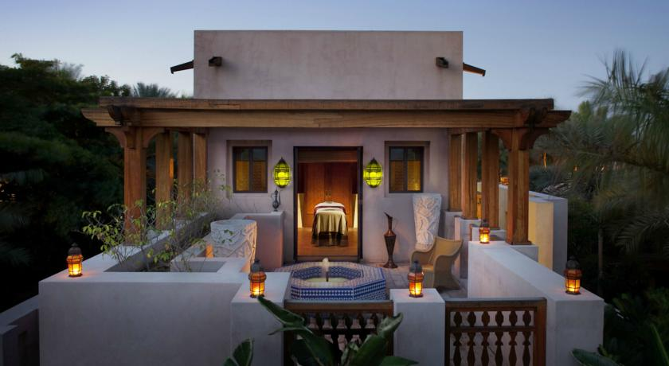
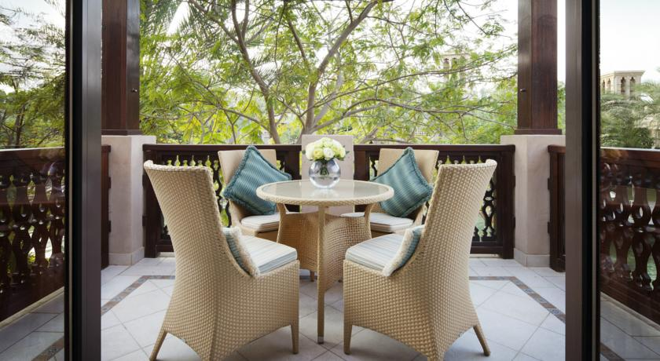

Jumeirah Dar Al Masyaf - Madinat Jumeirah



Set amongst tranquil gardens, waterways, exclusive pools and the resort’s private beach, the intimate and exquisite summerhouses of Jumeirah Dar Al Masyaf offers newly refurbished elegant and spacious guestrooms and courtyards, personalised and generous butler service and an understated Arabian luxury experience.
The summerhouses offer an exquisitely designed hideaway, large terraces overlooking the fresh seawater ways and high tech bedroom facilities. Jumeirah Dar Al Masyaf's luxurious guest rooms and suites are all located in Arabian-styled houses. All of the spacious rooms are decorated with furnishings of authentic Arabic style, and have luxury bathrooms.
Facilities of Jumeirah Dar Al Masyaf include a world class golf, Sinbad’s Kids Club, onsite Madinat Theatre, Madinat Jumeirah’s own private beach, watersports, tennis and luxury yachts.
With over 40 world-class restaurants, bars and lounges to choose from, you’ll enjoy a dizzying choice of dining options – each with a distinct theme, location and style. Whether you feel like an evening of terrific Thai or a night on the tiles with the finest cocktails, you’ll find your tastes fully satisfied at Madinat Jumeirah.
The resort also provides extensive leisure and health facilities including Talise Spa and Talise Fitness, indoor and outdoor pools, as well as Souk Madinat Jumeirah, a traditional retail and dining experience showcasing the best of Arabia.
Dubai International Airport is located 25 minutes away from the hotel. The property provides a complimentary shuttle service to Wild Wadi, Madinat Jumeirah, Jumeirah Beach Hotel, Burj Khalifa/Dubai Downtown and DIFC. Free parking is possible at the hotel.
Мы говорим на вашем языке!
Jumeirah Dar Al Masyaf - Madinat Jumeirah — принимает гостей с 22 дек. 2009
Номеров в отеле: 283, Сеть отелей: Jumeirah